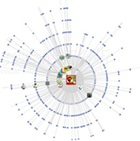

全媒体数据服务的开拓者与领导者
Pioneers and leaders in all media data services
限时优惠 即刻申请试用
3个月免费试用期
5折低价限时抢购
7大功能限时免费
-
数据提供
多元化数据服务支撑
依托平台强大的数据采集、智能分析处理能力，我们为客户提供适合各业务场景的数据服务
网络资讯数据 社交媒体数据 知识百科数据 官方统计数据 个性化数据定制
-
信息检测
全媒体覆盖 掌握深层情报
指定机构，企业，品牌，产品，人物，行业，新闻等全网信息监测 指定网站、微博、微信及贴吧论坛及信息源监测 指定地域信息监测 提供危机预警追踪 提供自动舆情简报 提供信息走势、信息属性、来雨啊分布、地域分布等图标分析
-
竞品分析
品牌、人物、行业数据竞争分析比对
通过对市场走势、媒体投放情况、正负面信息、用户分析等方面对比分析，帮助客户了解竞争情报，为自身品牌宣传提供决策数据。
信息量对比、走势对比 情感分析对比 正负面高频词对比 关键词云对比 信息地域、媒体来源、活跃媒体对比
-
全网事件分析
完整呈现事件发展的事件脉络及关键的传播节点，复现事件传播过程及变化趋势科学评估事件影响力指数，一键生成事件分析报告
事件走势、传播趋势 信心来源、情感分析、地域分布 传播路径、热门信息 关键词云、关键词汇 观点分析 ( 新闻观点、论坛观点、微博观点 )
-
微博传播分析
最全面的微博传播分析工具,精准刻画传播路径、洞察关键人物、解读用户画像、分析传播质量评估
真实转发量、覆盖人次分析 识别传播路径、引爆点、转发层级、关键用户 转评者性别、地域、兴趣标签分析 热词分析、表情分析 网友观点分析
-
微博事件分析
聚焦微博数据传播，深度解析事件传播趋势，提炼意见领袖观点，挖掘核心传播关键点
传播趋势、说话间脉络 热门信息、热门词汇 意见领袖、核心传播人 博主分析（ 地域、性别、认证、水军） 评论分析（ 观点、情绪 ）
-
典型解决方案1 - 全媒体融合业务应用
新闻数据提供者
全方位支撑媒体融合业务应用对数据获取能力的需求，实时采集网站，微博，微信，贴吧，论坛，视频等数据内容，适配多种媒体平台，为业务系统提供全方位数据支撑
-
突发事件
内容聚合

线索提供
深度解读
- 
传播分析
-
-
典型解决方案2 - 舆情监测及分析应用
舆情数据挖掘者
全面的站源覆盖、多元化的监测数据、先进的自然语言分析技术、科学的研究分析模型、全方位满足客户各类需求，包括危机预警追踪、舆情风险评估、专题事件追踪分析、传播价值评估、品牌声量口碑、竞品对比分析、社交媒体洞察等，为客户提供舆情数据支持。
-
典型解决方案3- 智能化资料管理应用
数据资料管理者
全格式数据支持，提供智能化，全业务流程的数据资料管理解决方案，可以轻松应对政府机关、企业单位、媒体机构对各种资料的管理需求。通过其强大的深度检索引擎，可以帮助客户更好的挖掘戒指数据，实现数据资源有效利用。
- 姓名 ：
- 单位 ：
- 岗位 ：
- 电话 ：
- 邮箱 ：
- 留言 ：
知闻科技愿意利用其自身技术协助客户在其业务平台的基础上引入完善成熟的数据服务体系，实现对全方位数据的精准定位及推送，充分满足客户对各种数据的需求服务
邮箱：Service@z-vn.com电话：123456789网址：www.z_cn.com
地址：北京市海淀区上地信息路7号数字传媒大厦420室
备案信息：2012-2015 All Right Reserved
京ICP备XXXXXX号-2 京公网安备XXXXX2号